答：修改系统文件 template\default\images图片文件下的：logo_bt_common.png图片。
答：修改系统文件：images\common中的logo.png图片
答:①08cms对部分功能进行了缓存优了，用户可以自行设置缓存时间，时间设的越长对你服务器的负担越小，用户可根据自已的服务器性能设一个合理的数据，设置操作【系统设置】->【附属配置】->【计划任务】。如图-01所示
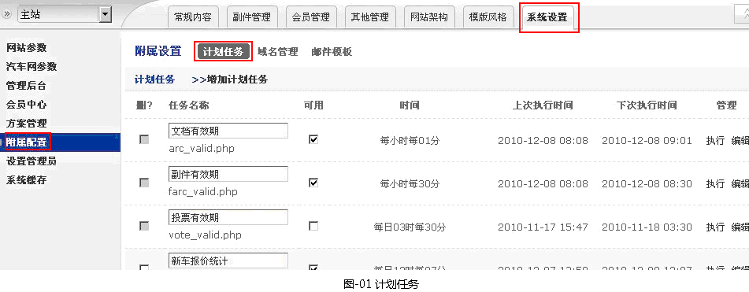
※不要随意修改这些初始设置除非你知道你知自已在干什么，否则会很容易被搞糟。即使不调整这些设置也会动行的很好。
②更新优化缓存，方法：【系统设置】->【系统缓存】->【刷新主站系统缓存】->勾选【更新优化缓存】->提交OK
③标识内缓存清理（查找页面标识清除缓存时间）。如图-02所示
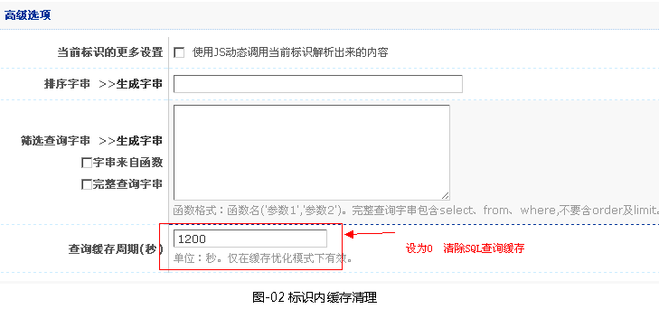
答：提供的，在系统后台的【其它管理】->【数据库相关】->【数据库词典】。如图-03所示
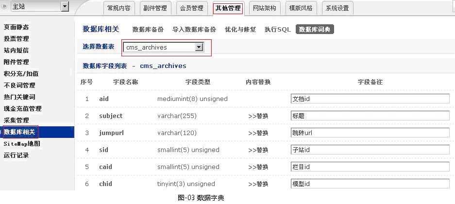
答：操作方法：
1.【系统设置】->【方案管理】->【上传方案】->添加上以下图框格式。如图-10所示
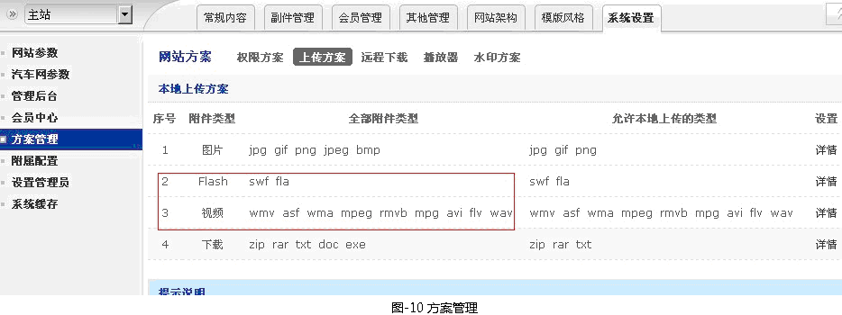
2.【系统设置】->【方案管理】->【播放器】。如图-11所示
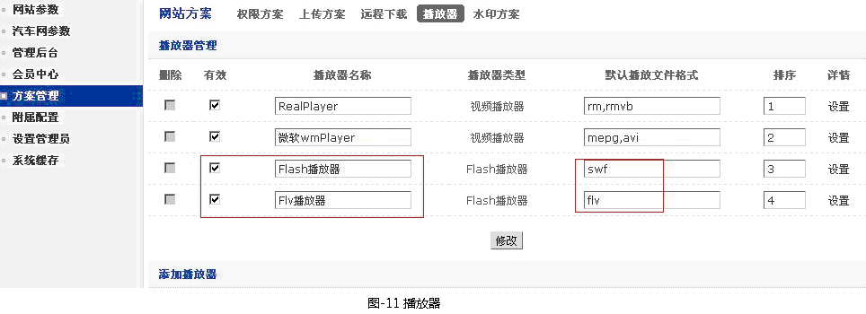
->上方标记(两)处->设置（均设置以下代码）。如图-12所示
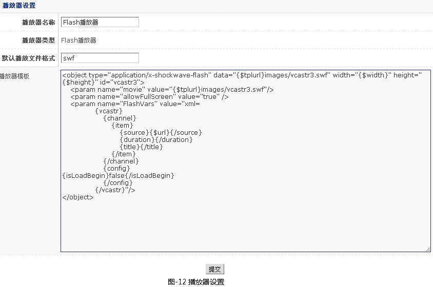
代码:
<object type="application/x-shockwave-flash" data="{$tplurl}images/vcastr3.swf" width="{$width}" height="{$height}" id="vcastr3">
<param name="movie" value="{$tplurl}images/vcastr3.swf"/>
<param name="allowFullScreen" value="true" />
<param name="FlashVars" value="xml=
{vcastr}
{channel}
{item}
{source}{$url}{/source}
{duration}{/duration}
{title}{/title}
{/item}
{/channel}
{config}
{isLoadBegin}false{/isLoadBegin}
{/config}
{/vcastr}"/>
</object>
->下载文件vcastr3.sw放在模板文件夹的images里。
下载地址：
http://bbs.08cms.com/attachment.php?aid=MjE3MXxhZTJmNzY5ZHwxMjk1ODM0MjQ1fGM1YmZlZ3grYWFhV0hqL1NBaUJjSzRBZXRDd2xtYzFZOWlvK2grUVI2MU16OHZZ
3. 在资讯模型里加添加【视频】字段
【网站架构】->【文档模型】->【文档模型管理】->选中资讯模型->详情,添加如下字段，如图-13所示。
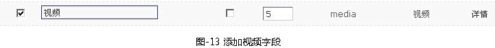
4. 制用复合标识
【模板风格】->【复合标识】->【Flash模块】，如图-14所示。
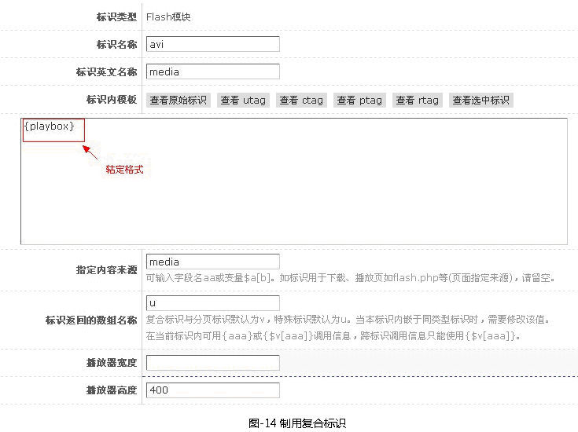
->调用{c$media}放在模板的相应位置即可->OK
答：因为服务器配置文件里默认是有限制上传文件大小的，需要在php.ini配置文件设置最大上传文件大小
答:水印设置的具体方法
第一步：系统设置->方案管理->水印方案，如图-14所示。

->点击【详情】->（进行相关设置，如下图-16所示）
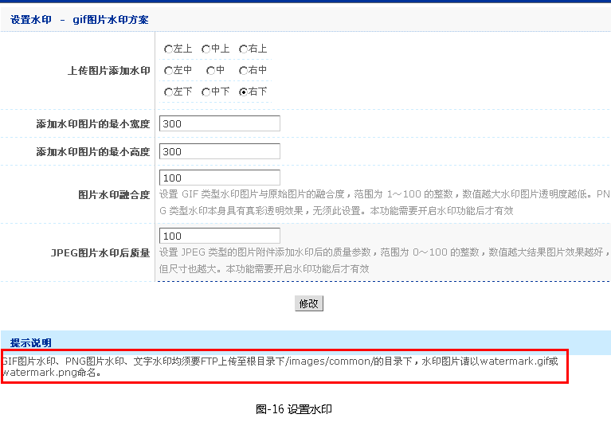
第二步：模型字段[单图]或[图集]里设置
【文档模型】->【文档模型管理】->选定某个模型(如：汽车图库)->[字段]->[单图]或[图集]，如下图-17所示
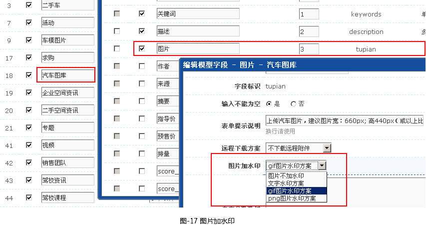
答：【主动生成静态】是管理员主动直接生成前台链接;
2.【被动生成静态】是当用户点击前台页面时，系统自动生成一个本页访问静态页面（第一次是动态的形势打开，第二次再点击这个页面时就是静态页面了，以后就会按规则设定的时间自动对已有的静态进行更新;）
3.【修复静态链接(补缺)】给[被动生成静态]
生成静态预设静态规则的静态地址，对已先前已生成的静态地址将不在生成，防止以下情况前台生成静态时可能会出现页面不存在现象。
①在未启动静态时添加的文章，之后再启动静态。
②静态文件被手动删除。
4.【修复静态链接(重写)】：强行生成所有的预设静态规则的静态地址，发下情况必须用此项
①静态规则变化;
※特别说明：【首页静态】在由静态转为动态时，请先执行【清除静态文件】，因为服务器一般设置.html为默认打开方式
详细网站静态设置查看[类目节点静态]一节。
答：a.为副件信息文档创建模板〖管理后台〗→〖模板管理〗→〖常规管理〗→〖副件信息〗内添加模板。
b.副件信息文档模板绑定〖管理后台〗→〖模板管理〗→〖副件信息〗
c.在模板里的标识调用方法与普通文本文档调用方法相同，直接调用{字段名称}。
※特别提示： 在副件文档列表标识采用复合标识里的〖副件列表〗标识调用，调用方如<a href="{arcurl}">{subject}</a >
答：通俗讲08cms的类目=类系+栏目，栏目也是类系里的一种。
类系和栏目的共同点：
① 栏目节点绑定模板
② 可以与其它类型类目交叉。
类系和栏目的区别：
① 类系分类支持多选
② 类系可以设置某个字段自动归类
③ 类系与类系间可以产生交叉节点
答：通俗可理解节点是用来绑定显示前台页面的模板用的一个工具。
具体标识内调用方法也两种:
一、一种是独立投票
1. 标识调用内表单的action="{$cms_abs}tools/vote.php?action=vote&vid={vid}"固定用写法
案例操作：
a. 网站后台->模板标识->复合标识->投票列表。图-20所示
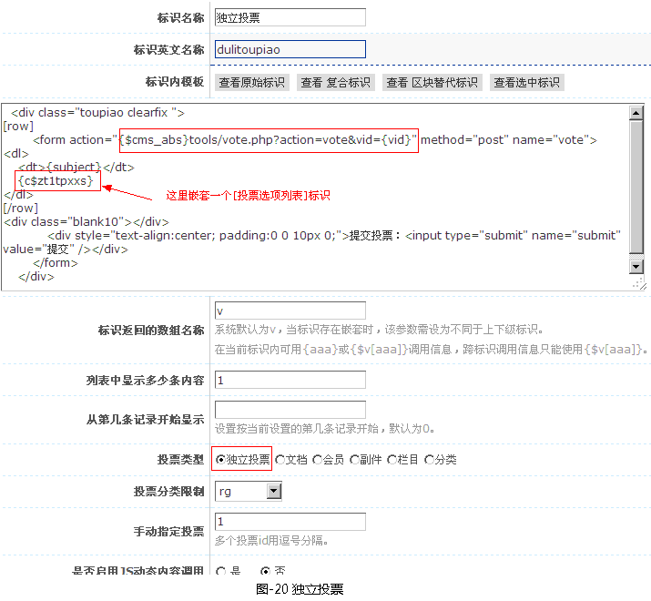
b. 网站后台->模板标识->复合标识->投票列表。图-21所示
c.独立投票标识制作OK，可以将该标识就用到相关模板上。
二、非独立投票标识做法
a. 表单action="{$cms_abs}tools/vote.php?action=vote&fname=投票字段标识&id=xx",xx为选择的投票类型ID
b.同独立投票作法相同
a. 在域名管理经销商管理控制面板对域名解析要您的服务器上。
b. 在服务按正常操作选取网站目录发布网站
c. 以上两部操作与08cms程无关，网站静态地址处理设置流程：网站后台 �C>系统设置->附属配置->域名管理->添加说明
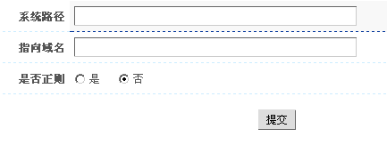
1.域名管理的作用是将系统中的url解析为绑定域名的形式。
2.可用于子站、栏目、文档、插件信息、会员频道等页面的域名绑定。
3.系统路径请输入根目录下的相对路径，域名请输入完整地址（带http;//），在正则规则里，使用\1的形式来实现反向引用。
普通示例：html/news/ = http://news.08cms.com/
正则示例：/^html\/(.+?)\//i = http://\1.08cms.com/
a. 不良词管理设置
管理后台�C>不良词管理�C>添加不良词
b. 不良词应用标识制作
模板风格�C>复合标识�C>文本处理�C>添加:在标识处理界面设置[过虑不良词]：是
c.将标识应用的模板
A. 关键词设置 网站后台->其它管理->热门关键词管理
B. 关键词应用标识制作，复合标识中的[文本处理标识]设置
C. 将标识应用到相关模板即可
※被关联词管理里成的[关联链接]可以手动修改。步骤：网站后台->其它管理->热门关键词->被关联词管理
以下设置适用于指定文件名页面的伪静态，请看操作。注：需要服务器支持Rewrite功能
1、系统后台设置
菜单顺序：系统设置 -> 网站参数 -> 页面设置
在“静态相关设置”尾部“.php?的Rewrite对应字串”框中填写你要伪静态的样式。如 / （你也可以多填一些字符，这里是示例）
提交 保存设置，现在你的页面链接伪静态了，但是不能正常访问，需要第 2 步操作
2、Rewrite设置，这里举 Apahe 的 Rewrite，如果为 IIS 可以在网上找相关文档，规则是一样的，以下两部分任选其一。
.htaccess 部分。适用于虚拟主机，没有Apache设置权限，但是支持 .htaccess
在本程序根目录下新建一个名为“.htaccess”的文件，注意前面有个点。输入以下内容：
RewriteEngine on
RewriteRule ^((?:.+?/)?(?:archive|index|list))/(.+)$ $1.php?$2
复制代码
保存。这样就可以了，稍候再解释
httpd.conf部分。
找到Apache/conf/httpd.conf文件，在相应的主机设置位置 类似以下这样的地方（以“#”开头的行忽略）
<Directory "my site path">
Options Indexes FollowSymLinks
AllowOverride All
Order allow,deny
Allow from all
</Directory>
复制代码
增加以下找码：
RewriteEngine on
RewriteRule ^((?:.+?/)?(?:archive|index|list))/(.+)$ $1.php?$2
复制代码
修改为以下这样：
<Directory "my site path">
Options Indexes FollowSymLinks
AllowOverride All
Order allow,deny
Allow from all
RewriteEngine on
RewriteRule ^((?:.+?/)?(?:archive|index|list))/(.+)$ $1.php?$2
</Directory>
复制代码
即可。
解释：
^((?:.+?/)?(?:archive|index|list))/(.+)$ $1.php?$2
复制代码
标准正则表达式语法，(?:.+?/)?是指前面任意路径。(?:archive|index|list)冒号后坚线分隔要伪静态的文件名。(.+)$前面的“/”就是在步骤一后台设置中输入的部分（注：特殊字符是需要转意的，如果你不了解，可以上网查查正则表达式的知识）
教程论坛链接地址：
http://bbs.08cms.com/viewthread.php?tid=2239&rpid=14557&ordertype=0&page=1#pid14557
答：1. 添加：进入网站架构―>类目管理，点击“资讯”栏目右边的“添加”进行子栏目添加
2. 修改：找到需要调整的资讯子栏目进入“详情”进行相关设置
3. 删除：点击相关资讯子栏目右边的删除，在删除前保证些栏目中没有内容
答：进入“系统设置”―》“网站参数”―》“电子商务”，如图-27所示
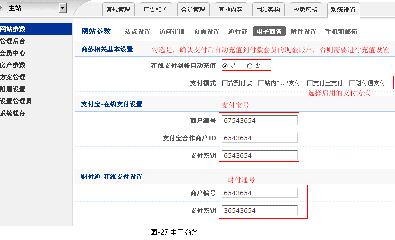
答：1. 会员在会员中心进行认证信息提交
2. 在管理后台的“会员管理”―>“经纪人”―>“认证审核”―>“认证审核”会员产生相关的认证记录管理员需要进行认证审核
答：1. 首先确定您要初始化的地图是属于会员模型还是文档模型。
2.若是会员模型，确定地图是属于哪类会员模型，在该所属会员模型中地图字段〖详情〗中设置初始值
操作步骤：[网站架构]->会员模型->会员模型管理->选择您要修改的模型[详情]->找到字段类型为地图字段->详情)，然后地图界面选择您在设置的初始位置点击确定，如图-29所示

3.若是文档模型，确定地图是属于哪个文档模型，在该文档模型内将地图字段的详情中设置初始值
操作方法：网站架构]->文档模型]->文档模型管理]->选择您要修改的模型[详情]]->找到字段类型为地图字段]->详情，与会模型相类似。
答：
1.首页确定系统中以下目录或文件需要可读写权限，目录后带*的，需要目录及其所有下级文件及目录可读写。
如果以下目录在安装包中不存在，可手动添加并设置权限。
/注：系统根目录
/base.inc.php
/adminc/pcache/
/dynamic/*
/html/
/images/common/*
/info/
/member/
/mspace/
/template/*
/userfiles/*
2.重建模板页面缓存
第一种方法：[模板风格]->模板管理->基本设置->模板解析为调试状态为否
第二种方法：[模板风格]->模板相关->重建模板缓存，如图-30所示。
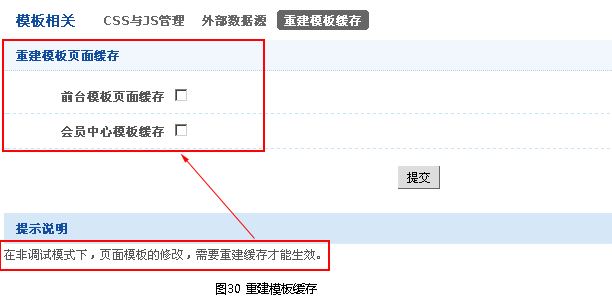
3.清空浏览器缓存
a.火狐浏览器清除缓存的设置方法,如图-31所示。
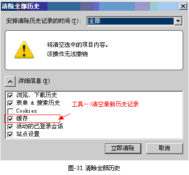
b.清除IE2.0浏览器缓存
工具->删除浏览的历史记录,如图-32所示。
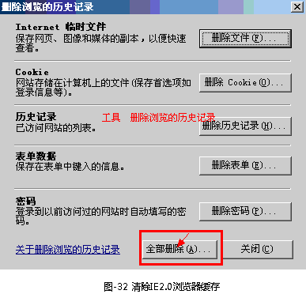
答：
RSS主要应用节点页上，不适合应用到内容页上
RSS操作适用流程
1. 模板的建立，[模板管理]->常规管理->RSS/SiteMap
模板文件采用XML语法建立
一个 RSS 实例文档
RSS 文档使用一种简单的自我描述的语法：
让我们看一个简单的 RSS 文档：
<?xml version="1.0" encoding="ISO-8859-1" ?>
<rss version="2.0">
<channel>
<title>W3School Home Page</title>
<link>http://www.08cms.com</link>
<description>Free web building tutorials</description>
<item>
<title>RSS Tutorial</title>
<link>http://www.08cms.com/rss</link>
<description>New RSS tutorial on W3School</description>
</item>
<item>
<title>XML Tutorial</title>
<link>http://www.08cms.com/xml</link>
<description>New XML tutorial on W3School</description>
</item>
</channel>
</rss>
文档中的第一行：XML 声明 - 定义了文档中使用的 XML 版本和字符编码。此例子遵守 1.0 规范，并使用 ISO-8859-1 (Latin-1/West European) 字符集。
下一行是标识此文档是一个 RSS 文档的 RSS 声明（此例是 RSS version 2.0）。
下一行含有 <channel> 元素。此元素用于描述 RSS feed。
<channel> 元素有三个必需的子元素：
<title> - 定义频道的标题。（比如 w3school 首页）
<link> - 定义到达频道的超链接。（比如 www.08cms.cn）
<description> - 描述此频道（比如免费的网站建设教程）
每个 <channel> 元素可拥有一个或多个 <item> 元素。
每个 <item> 元素可定义 RSS feed 中的一篇文章或 "story"。
<item> 元素拥有三个必需的子元素：
<title> - 定义项目的标题。（比如 RSS 教程）
<link> - 定义到达项目的超链接。（比如 http://www.08cms.com/rss）
<description> - 描述此项目（比如 w3school 的 RSS 教程）
最后，后面的两行关闭 <channel> 和 <rss> 元素。
RSS 中的注释
在 RSS 中书写注释的语法与 HTML 的语法类似：
<!-- This is an RSS comment -->
2.模板绑定
模板绑定：网站架构->类目节点->节点配置管理
在需要使用的节点配置绑定RSS模板,如图-33所示。
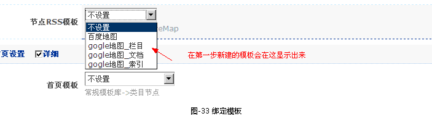
答：
08cms每篇文章可以用个5个关键词，可以用中文逗号，英文逗号和空隔隔开，每个关键词到少要2个汉字（4字节）和最大8个汉字（16个字节）。不符合本条件的填法会自动清空。